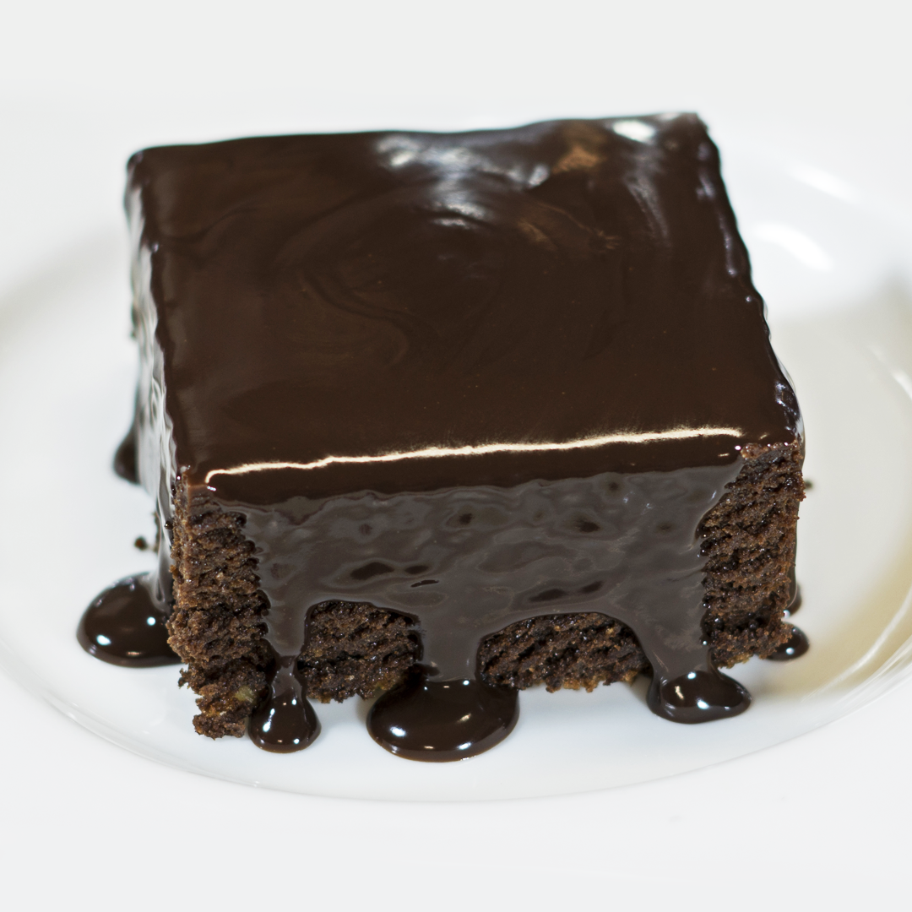
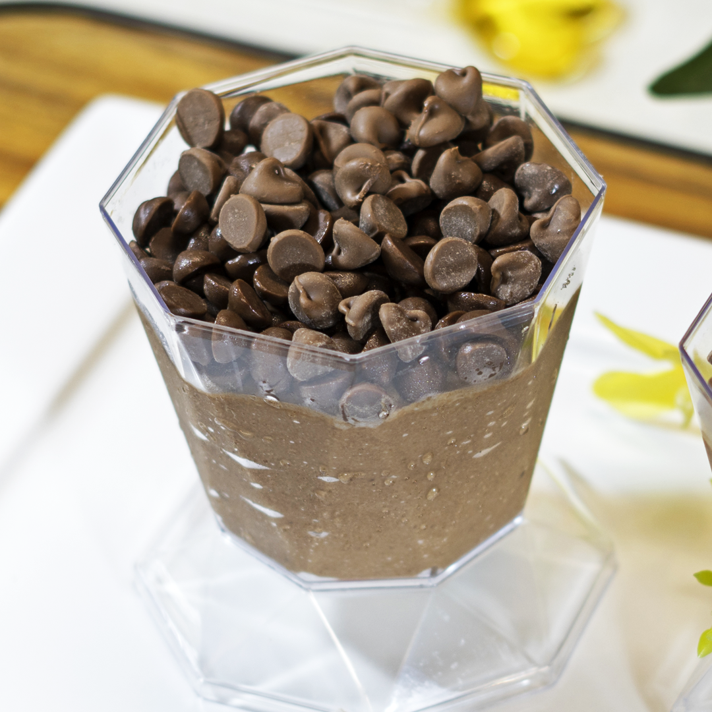
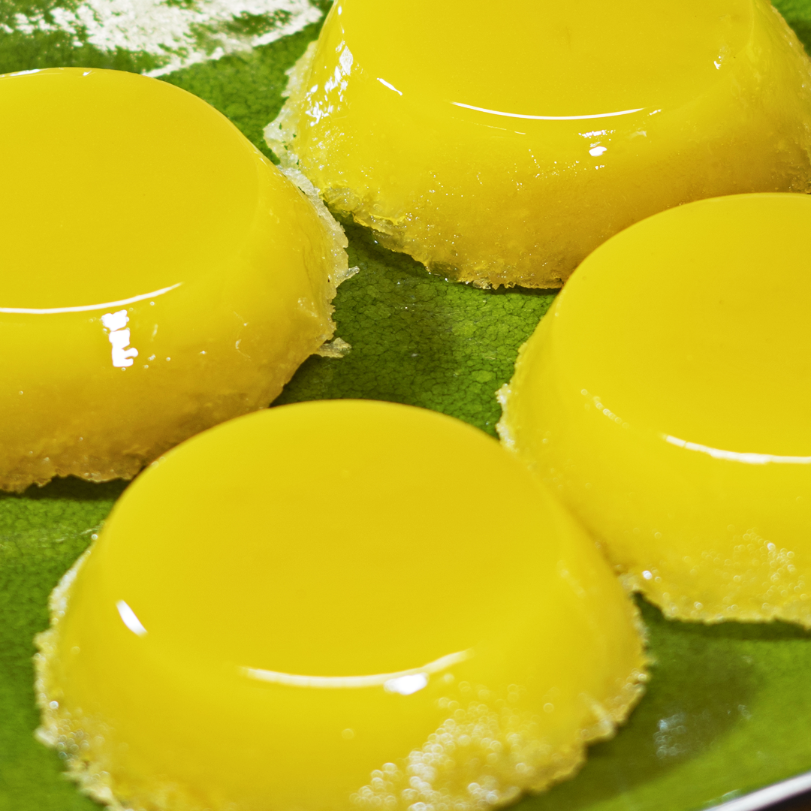
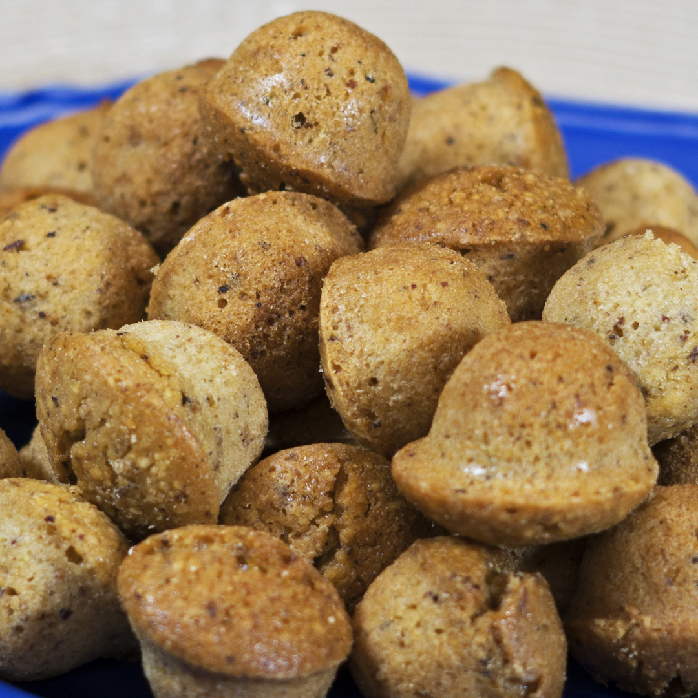
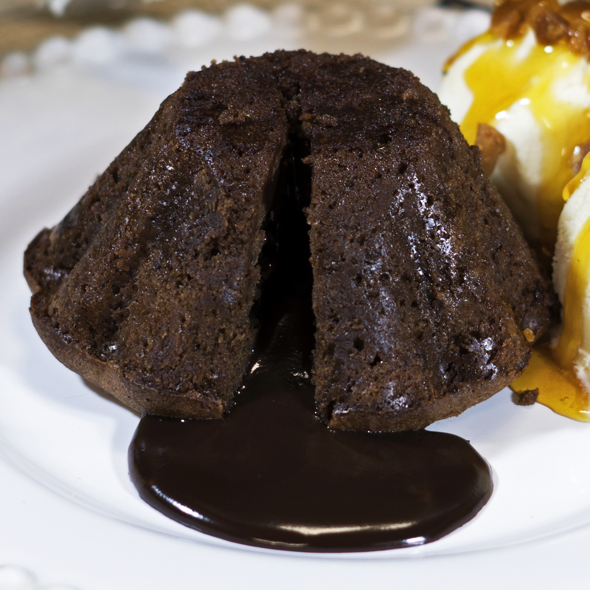

Mousse De Maracujá

A musse ou mousse é um tipo de sobremesa cremosa feita de ovos e/ou natas em combinação com outros ingredientes que lhe dão sabor, como o chocolate ou frutas. !
Brownie
Uma sobremesa de chocolate típico da culinária dos Estados Unidos e pode considerar-se um bolo feito num tabuleiro para bolos e partido em pequenos quadrados. É geralmente acompanhado por sorvete.!
Mousse De Chocolate
A musse ou mousse é um tipo de sobremesa cremosa feita de ovos e/ou natas em combinação com outros ingredientes que lhe dão sabor, como o chocolate ou frutas.!
Quindin
Um doce que tem como ingredientes gema de ovo, açúcar e coco ralado. A receita do nordeste brasileiro corresponde à receita portuguesa conhecida como brisa-do-Lis, com uma única diferença que é a utilização de coco ralado em vez de amêndoa.!
Fiancier
Um pequeno bolo de amêndoa francês, aromatizado com beurre noisette, geralmente cozido em um pequeno molde. Leve, úmido e com um exterior crocante.
Petit Gateo
Uma deliciosa sobremesa composta de um pequeno bolo de chocolate com casca e recheio cremoso servido geralmente acompanhado de sorvete!!